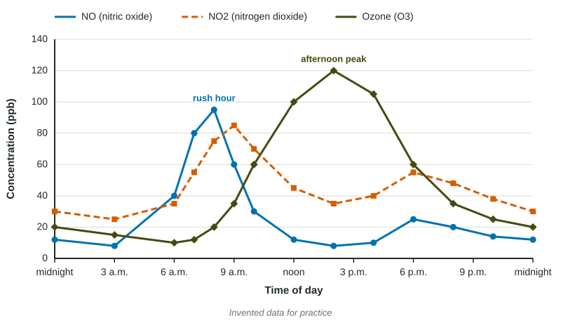

Photochemical Smog
Photochemical smog is a mix of secondary pollutants, mainly ground-level ozone, made when nitrogen oxides and VOCs react in sunlight.
Part 1 · Hook
Why this matters
Part 2 · Before you start
What this builds on
Part 3 · Prerequisite check
Quick check before you start
1. Which of these is a secondary pollutant?
- Ozone near the ground
- Carbon monoxide from a tailpipe
- SO2 from a smokestack
- Soot from a diesel truck
Show the answer
Ozone near the ground forms in the air from NOx and VOCs, so it is secondary.
- Correct: Ozone near the ground:
- Carbon monoxide from a tailpipe:
- SO2 from a smokestack:
- Soot from a diesel truck:
2. What does the ozone layer in the stratosphere do?
- Absorbs much of the sun's UV radiation
- Traps rain clouds near the ground
- Releases oxygen for breathing
- Holds pollution in the troposphere
Show the answer
Stratospheric ozone absorbs UV radiation before it reaches the surface.
- Correct: Absorbs much of the sun's UV radiation:
- Traps rain clouds near the ground:
- Releases oxygen for breathing:
- Holds pollution in the troposphere:
Part 4 · See it
See it first

Part 5 · Step by step
How it works, step by step
- Morning traffic burns fuel at high temperatureNO and VOCs are released into the city air
- NO reacts in the airNO2 builds up, peaking about an hour after the rush
- Sunlight splits NO2 into NO and a single oxygen atomthe oxygen atom joins O2 to form ozone (O3)
- VOCs react with NO, so NO cannot break the ozone downozone accumulates and peaks in mid-afternoon
- People breathe the ozone-rich airairways are irritated, asthma attacks rise, and crops and leaves are damaged
Part 6 · Key ideas
Key ideas
- Photochemical smog forms when NOx and VOCs react in sunlight. Its main part is ground-level ozone, a secondary pollutant.
- Through a day: NO peaks with morning traffic, NO2 about an hour later, and ozone in the early afternoon. Ozone falls after dark.
- Smog is worst on hot, sunny, still days in cities with heavy traffic, and often downwind of them.
- Ozone up in the stratosphere absorbs UV radiation. Ground-level ozone, the same molecule, harms lungs and plants.
Part 7 · Misconception
A common mistake
The wrong idea: Ozone is highest at rush hour, when traffic releases it.
What actually happens: Traffic releases NO, not ozone. Ozone forms hours later as sunlight splits NO2, so it peaks in the early afternoon.
Part 8 · Check yourself
Check yourself
Exam-style questions. Anything you miss goes into your review queue.
1. What two kinds of primary pollutant react in sunlight to form photochemical smog?
- Nitrogen oxides and volatile organic compounds
- Sulfur dioxide and carbon dioxide from coal
- Carbon monoxide and lead from old car engines
- Methane and water vapor released from swamps and wetlands
Show the answer
Nitrogen oxides from hot combustion and volatile organic compounds from fuel vapor and solvents react in sunlight to make ozone and other smog chemicals.
- Correct: Nitrogen oxides and volatile organic compounds: Right: NOx and VOCs plus sunlight make photochemical smog.
- Sulfur dioxide and carbon dioxide from coal: SO2 and soot make the gray, sooty kind of smog; CO2 is not a smog ingredient.
- Carbon monoxide and lead from old car engines: Neither is a key ingredient of photochemical smog.
- Methane and water vapor released from swamps and wetlands: Neither drives the sunlight reactions that make smog ozone.
Model or diagram
NO, NO2 and ozone through a sunny weekday in a city
2. At about what time does ozone reach its highest level on this day?
- About 8 a.m., at 95 ppb
- About 2 p.m., at 120 ppb
- About 9 a.m., at 85 ppb
- About 6 p.m., at 60 ppb
Show the answer
The dashed ozone line peaks at 120 ppb at hour 14, which is 2 p.m., six hours after the NO peak.
- About 8 a.m., at 95 ppb: That is the NO peak during the morning commute; ozone is still low then.
- Correct: About 2 p.m., at 120 ppb: Right: the ozone line is highest at hour 14.
- About 9 a.m., at 85 ppb: That is the NO2 peak. Ozone builds later, as sunlight strengthens.
- About 6 p.m., at 60 ppb: At 6 p.m. ozone is falling; its peak came four hours earlier.
3. Why does the NO2 peak come about an hour after the NO peak?
- NO from morning traffic reacts in the air to form NO2
- Cars switch from releasing NO to NO2 as their engines warm
- NO2 forms when sunlight splits ozone apart in the afternoon
- NO2 drifts in from a coal plant far upwind of the city
Show the answer
Cars release mostly NO. In the air, NO reacts to form NO2, so NO2 builds up just after the NO from the morning rush.
- Correct: NO from morning traffic reacts in the air to form NO2: Right: NO2 is made from the NO, so it peaks after it.
- Cars switch from releasing NO to NO2 as their engines warm: Engines release mostly NO all day; NO2 forms in the air.
- NO2 forms when sunlight splits ozone apart in the afternoon: Sunlight splits NO2 to help make ozone, not the other way round, and the NO2 peak is in the morning.
- NO2 drifts in from a coal plant far upwind of the city: The NO2 rise follows the local NO rise from traffic, not a distant source.
4. Between 9 a.m. and 2 p.m., NO2 falls from 85 to 35 ppb while ozone rises from 35 to 120 ppb. Which process explains both changes?
- Ozone sinks down from the stratosphere at midday
- Wind blows the NO2 away and brings ozone from the sea
- Rain washes NO2 out and leaves ozone behind in the air
- Sunlight splits NO2 and the oxygen atom forms ozone
Show the answer
Sunlight splits NO2 into NO and a single oxygen atom. The oxygen atom joins an O2 molecule to make O3. So NO2 is used up as ozone is made.
- Ozone sinks down from the stratosphere at midday: The ozone layer stays far above; this ozone forms near the ground from NO2.
- Wind blows the NO2 away and brings ozone from the sea: Wind does not explain why the two change in step with the sunlight.
- Rain washes NO2 out and leaves ozone behind in the air: The day is sunny; nothing in the graph points to rain.
- Correct: Sunlight splits NO2 and the oxygen atom forms ozone: Right: NO2 is used up as O3 is made, which is why one falls as the other rises.
5. Find the percent change in ozone from 6 a.m. to 2 p.m.
Type a number, then its unit (%). Scale words (2.5 million) and powers of ten (2.5 × 10^6) are read.
Show the answer
- Answer: 1100 %
6. Ozone in the stratosphere protects life, but ozone near the ground is a pollutant. What is the difference?
- They are two different molecules with the same name
- Up high it absorbs UV; down low people breathe it in
- Ozone near the ground is harmless at any level
- Ozone up high comes from car exhaust drifting upward
Show the answer
Same molecule, different place. High in the stratosphere O3 absorbs UV radiation; in the air we breathe it irritates and damages lung tissue and plant leaves.
- They are two different molecules with the same name: Both are O3; only the location differs.
- Correct: Up high it absorbs UV; down low people breathe it in: Right: location decides whether ozone helps or harms.
- Ozone near the ground is harmless at any level: Ozone near the ground irritates lungs and harms crops.
- Ozone up high comes from car exhaust drifting upward: Stratospheric ozone forms from O2 split by UV light, not from exhaust.
7. Put the steps that form photochemical smog on a sunny day in order.
- Morning traffic releases NO and VOCs
- NO reacts in the air to form NO2
- Sunlight splits NO2 into NO and an oxygen atom
- The oxygen atom joins O2 to form ozone
- VOCs tie up NO, so ozone builds through the afternoon
Show the answer
Emission, then NO to NO2, then sunlight splitting NO2, then O + O2 forming O3, and VOCs keep the ozone from being destroyed.
- Correct order: 1. Morning traffic releases NO and VOCs 2. NO reacts in the air to form NO2 3. Sunlight splits NO2 into NO and an oxygen atom 4. The oxygen atom joins O2 to form ozone 5. VOCs tie up NO, so ozone builds through the afternoon
Part 9 · Summary
Summary
Part 10 · Up next
What comes next
Part 11 · Connections